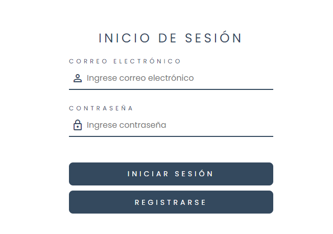

Practicas con Vue JS:
En estas practicas aprendí nuevos conceptos de la tecnología Vue JS, practiqué los conocimientos anteriormente estudiados, y algunos de los temas vistos. Los cursos vistos fueron los siguientes:
Curso 1:
Curso 2:
Temas vistos en los cursos:
- Variables Reactivas.
- Estructura de archivos.
- Estructura de codigo(script,template,style).
- Directivas.
- V-IF
- V-ELSE-IF
- V-ELSE
- V-BIND(con abreviación :)
- V-FOR
- V-SHOW
- V-ON(con abreviación @)
- Propiedades computadas.
- Interpolación de texto.
- Modificadores en las directivas.
Practica 5: Contador en Vue JS
En esta práctica aprendí nuevos conceptos en comparación con lo visto en los cursos, en este caso trabajé con componentes, que era un concepto nuevo para mí. Para la práctica simplemente me tocó integrar ciertas funcionalidades nuevas, pero como tal, el contador con sus respectivos botones ya funcionaban.
Instrucciones de la actividad:
- Si el número es positivo, entonces:
- El valor del contador cambiará a "verde".
- Mostrar el texto: "El número 4 es positivo" en color "verde".
- Si el número es negativos, entonces:
- El valor del contador cambiará a "rojo".
- Mostrar el texto: "El número 4 es negativo" en color "rojo".
- Si el número es un cero, entonces:
- El valor del contador cambiará a "gris".
- Mostrar el texto: "El número 0 es neutral" en color "gris".
- Si el número es primo:
- El valor del contador cambiará a "azul".
- Mostrar el mensaje: "¡Número primo!" en color "azul".
En este caso los nuevos temas aprendidos fueron los siguientes:
- Componentes
- Composables
- Exportación de propiedades computadas.
- Utilización de props.
- Lazy Loading Routes.
Practica 6: Login en Vue JS
El objetivo de esta práctica era utilizar el mismo concepto y componentes para realizar otra integración de un formulario para registro de nuevos usuarios.
Instrucciones de la actividad:
- Crear otra ruta para la vista de registro de usuario.
- Integrar campo para confirmación de contraseña.
- Creación de nuevo composables.
- Integrar boton para volver al inicio de sesión.
- Integrar boton de registro de usuario.
En este caso los nuevos temas aprendidos fueron los siguientes:

- Guards.
- Integración de Router Vue.
- Control de errores(404).
- Distinción de layouts y componentes.